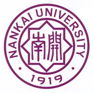

About Me
Hi! I am a Ph.D. student in the Programming Language Lab, School of Computer Science at Peking University, advised by Prof. Sergey Mechtaev. Previously, I completed a double major in Cyber Science and Law at Nankai University.
While LLMs and AI agents provide substantial support for programming, they frequently generate plausible code that fails to align with human intent. My research aims to address the oracle problem in AI-generated code through advances in programming languages and software engineering. Specifically, I seek to construct reliable correctness oracles or derive oracle-like signals in settings where no explicit oracle is available.
Education
Supervisor: Sergey Mechtaev · Expected graduation: 2030

Double major in Cyber Science and Law · GPA: 3.79/4 · Ranked 1st
Publications
An oracle-free approach to validating LLM-generated formal specifications using synthesized contrapuntal languages. Representational diversity helps reduce correlated errors and makes cross-language agreement a more reliable validation signal.
An oracle-free approach that detects hallucinations in LLM-generated code by checking consistency across transformed programming tasks, supported by theoretical analysis and empirical evaluation.
An oracle-free approach that uses structured natural-language reasoning about program states to assess code correctness.
Selected Awards & Honors
Academic Service & Teaching
ICSE 2026; ICSE 2027
04834580 Software Engineering (Honor Track), taught by Prof. Sergey Mechtaev
Operating System, taught by Prof. Xiaoli Gong